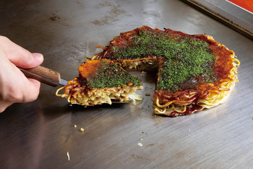
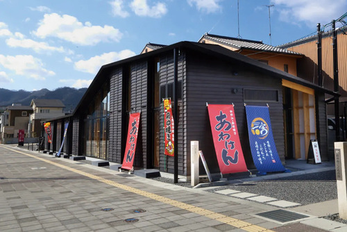
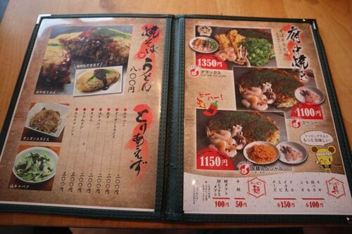
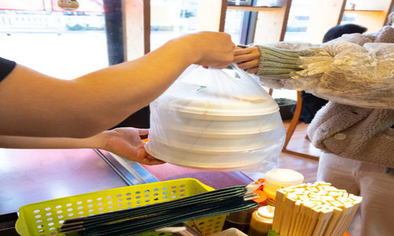

こだわり
Ⅰ.府中焼き
ミンチの油でカリカリサクサクっとした触感を堪能できる！
Ⅱ.店舗
懐かしく美しい石州街道のまち並みと調和した、石州街道に残る黒壁や軒先のある風景をイメージした素敵な外装。
Ⅲ.メニュー
舌の肥えた府中市民が愛する府中焼きや鉄板焼きなど豊富なメニューでお迎え。
Ⅳ.テイクアウト
府中焼きを自宅でもおいしく召し上がることも可能！
ミンチの油でカリカリサクサクっとした触感を堪能できる！
懐かしく美しい石州街道のまち並みと調和した、石州街道に残る黒壁や軒先のある風景をイメージした素敵な外装。
舌の肥えた府中市民が愛する府中焼きや鉄板焼きなど豊富なメニューでお迎え。
府中焼きを自宅でもおいしく召し上がることも可能！